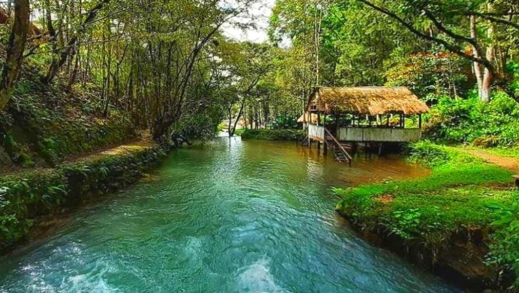
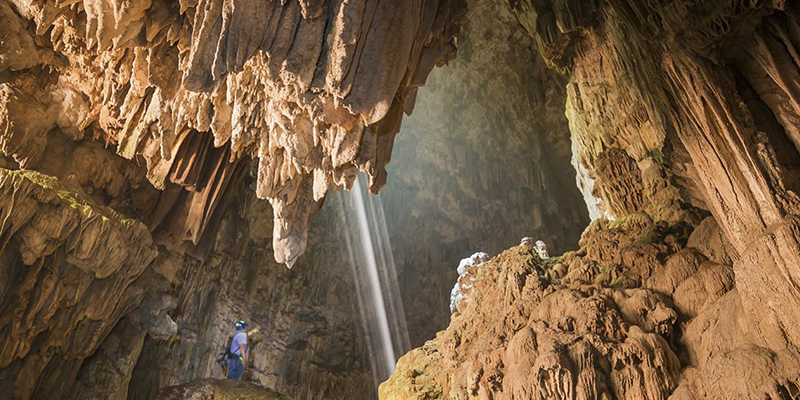
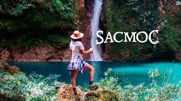

Biotopo Del Quetzal
El Biotopo del Quetzal está ubicado en el municipio de Purulhá, en Baja Verapaz. Este tiene una extensión territorial de 1,044 hectáreas y fue establecido oficialmente como área protegida el 2 de junio de 1976 debido a la gestión del fundador Mario Dary Rivera, con el principal objetivo de proteger al quetzal y su hábitat, el bosque nuboso. En Guatemala las áreas protegidas son lugares destinados a la conservación de la flora y fauna silvestre incluyendo espacios de protección del ambiente natural, sitios históricos, arqueológicos y recreativos.

Grutas del Rey Marcos
Las Grutas del Rey Marcos son un impresionante destino turístico que durante 20 años ha recibido a quienes visitan la región de Alta Verapaz. Este espacio ofrece una experiencia mística, fantástica, llena de aventura y energía positiva en contacto con la naturaleza. Cuentan con pozas naturales en medio del bosque nuboso, senderos, canopy, paseos en lancha, grutas para explorar, cabañas para hospedarse y mucho más. Además, su tour de cuevas sin duda es único gracias a los paisajes rocosos que se pueden observar. Estas grutas son un sistema de cuevas con un río subterráneo y en la actualidad las Grutas del Rey Marcos siguen siendo visitadas para ceremonias mayas.

Laguna Lachua es un parque nacional de categoría uno, también tiene un récord mundial por ser un sitio RAMSAR debido a la conservación de la diversidad biológica en la flora y la fauna. La laguna tiene una forma circular y está rodeada por una selva tropical al norte de Cobán. El Parque Nacional Cuevas Candelaria es un sistema subterráneo de ríos y cuevas, considerado entre los más grandes e impresionantes de América Central. Esta región tiene una gran importancia cultural y natural, ya que fue un lugar de peregrinación principal para la antigua civilización maya y continúa albergando una gran cantidad de flora y fauna.
Cuevas de B'omb'il Pek y Jul Iq'
Para llegar, es necesario realizar una caminata de 40 minutos aproximadamente por un sendero verde. De hecho, el recorrido en el interior de cada una de las cuevas dura un aproximado de media hora. En las cuevas Jul Iq existen pintadas imágenes de un jaguar y dos monos. Dichas pinturas pertenecen a la época clásica maya —que data del 200 al 800 a.C.—. El interior está ventilado por aire frío, además de caracterizarse por su ambiente húmedo.

Finca Sacmoc
Finca Sacmoc es una locación privada ubicada a 32 kilómetros de la ciudad de Cobán. Desde 2017 está abierta a visitantes que busquen disfrutar y aprender de la naturaleza en un ambiente seguro, alejado de centros de población y con conciencia ambiental. En el lugar podrá caminar bajo bosques subtropicales, conocer sobre su flora y fauna, sumergirse en ríos cristalinos, visitar majestuosas cascadas y convivir con las personas locales para conocer cómo se vive en la Guatemala rural.
